[✲ MF Minazuki]
[✲ MF Minazuki] [✶ Burner institute]
[✶ Burner institute] [✦ La récolte citadine]
[✦ La récolte citadine] [✛ Maintenance, contrôles et dérapages]
[✛ Maintenance, contrôles et dérapages] [✹ Images archivées, collectées, empruntées]
[✹ Images archivées, collectées, empruntées] [✷ Éphémère]
[✷ Éphémère] [❊ Sérigraphie]
[❊ Sérigraphie] [❉ Claire Laurent]
[❉ Claire Laurent]MF Minazuki,
type Design pour une typographie variable,
2023.
Minazuki est le projet de création typographique que j'ai effectué lors de mon Eramus+ à Amsterdam en 2023. À l'aide de Jolana Sýkorová j'ai développé cette typographie dans son ensemble, de la phase d'expérimentation jusqu'à la réalisation technique. Minazuki est une typographie de titrage qui poursuit les intentions d'un projet que j'ai créé, dans lequel j'ai créé des lettres basées sur des empreintes de mains. Elles ont pour but de représenter les plantes, les humains et les insectes à travers une seule identité. Brisant la frontière entre ces trois entités, elles témoignent d'une hybridation entre la plante, l'homme et l'insecte comme s'ils faisaient partie d'un tout. À la fois violentes et douces, les formes acérées et les courbes de Minazuki reflètent l'aspect organique de son inspiration. Utilisation d'inktraps pour souligner les courbes de certains caractères.
MF Minazuki fait aujourd'hui partie du projet de la fonderie Milletype Foundry mené avec Romain Marc.
MF Minazuki,
type Design for a variable typeface,
2023.
Minazuki is the typographic design project I carried out during my Eramus+ in Amsterdam in 2023. With the help of Jolana Sýkorová, I developed this typeface in its entirety, from the experimental phase through to technical realization. It is now part of the Milletype Foundry project with Romain Marc. Minazuki is a display typeface that pursues the intentions of a project created me, in which I created letters based on handprints. They aimed to represent plants, humans and insects through a single identity. Breaking the border between these three entities, they illustrate a hybridization between the plant, the human and the insect as if they were part of a whole. At once violent and gentle, Minazuki’s sharp shapes and curves reflect the organic spect of its inspiration. Using inktraps to emphasise te curves of the typeface.
MF Minazuki is now part of the Milletype Foundry project lead with Romain Marc.
 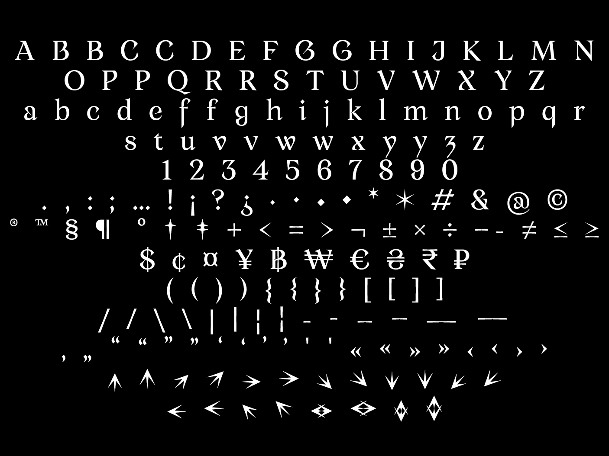
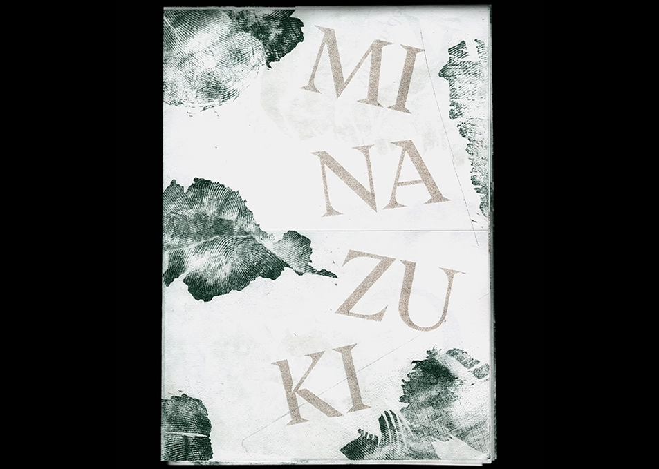
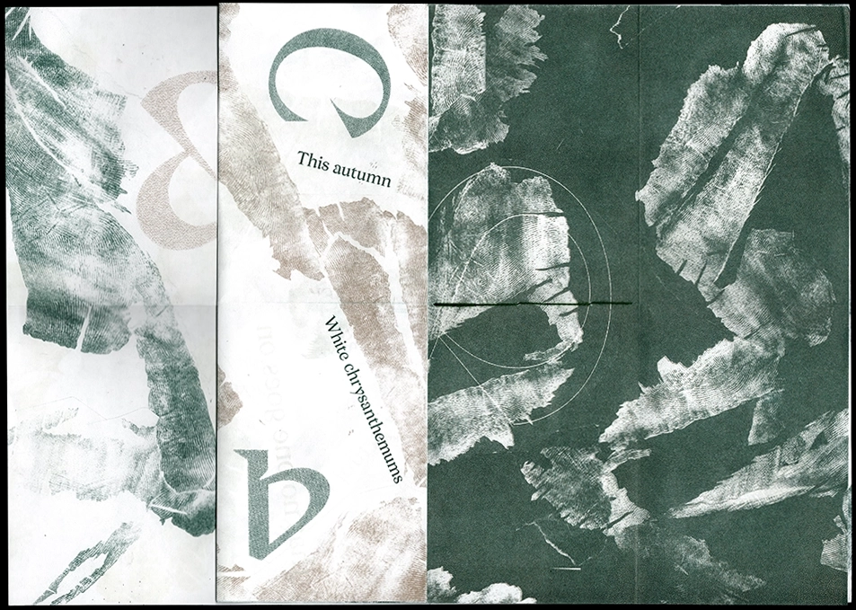
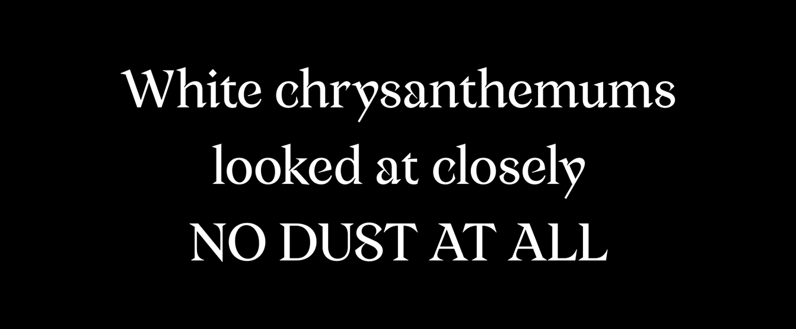
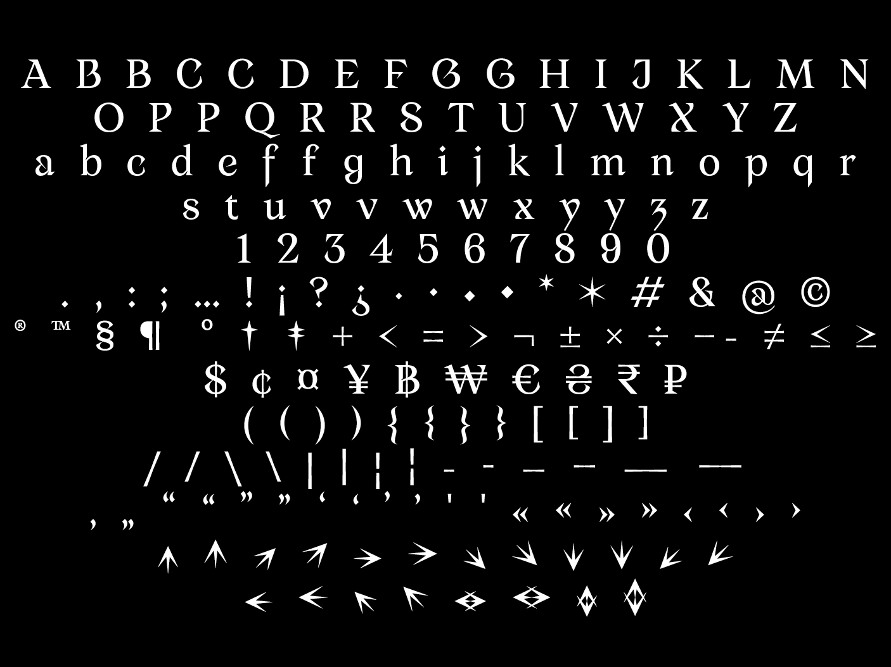
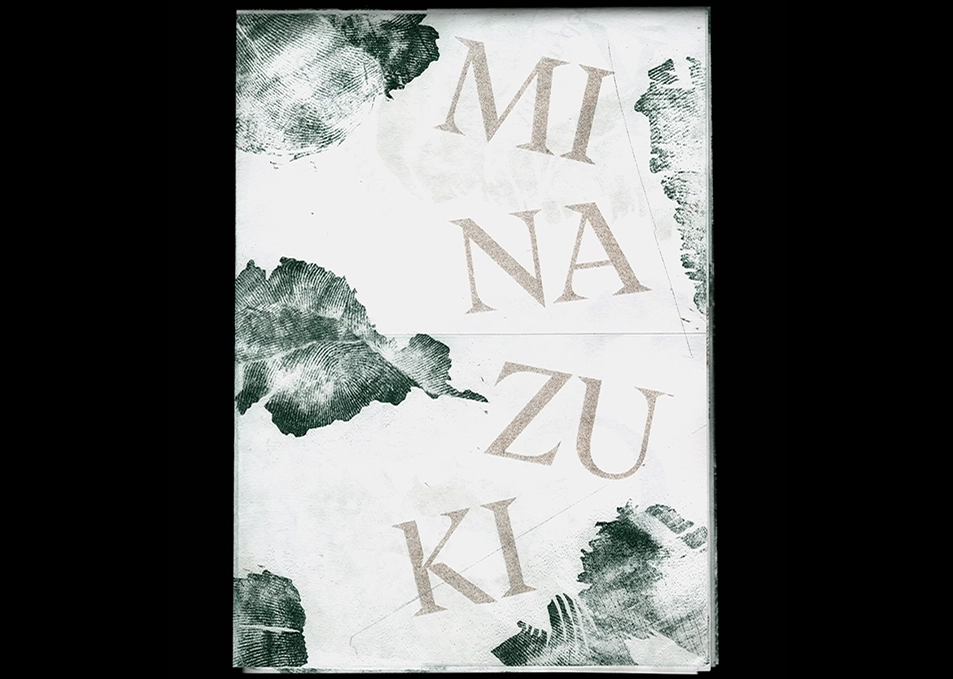
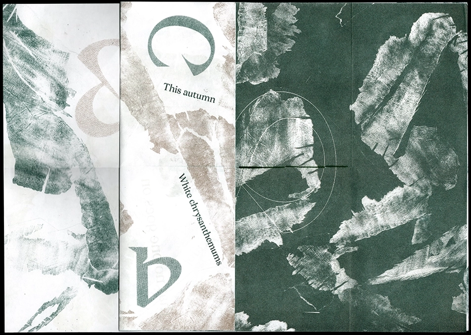
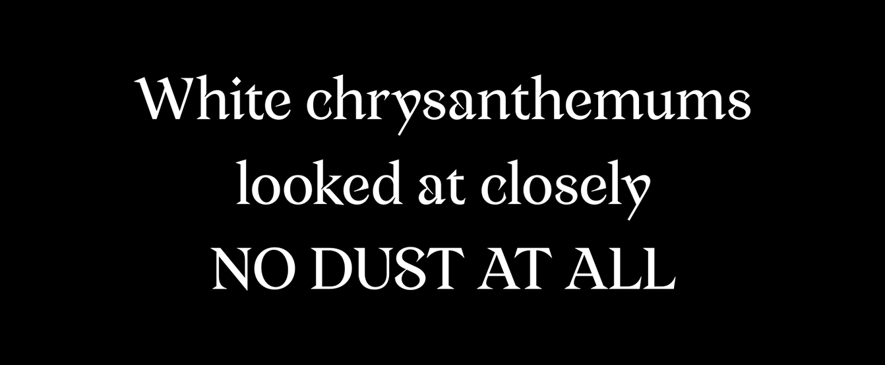
 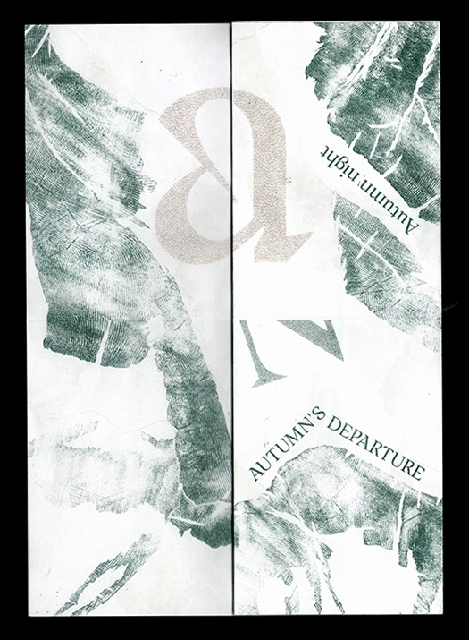
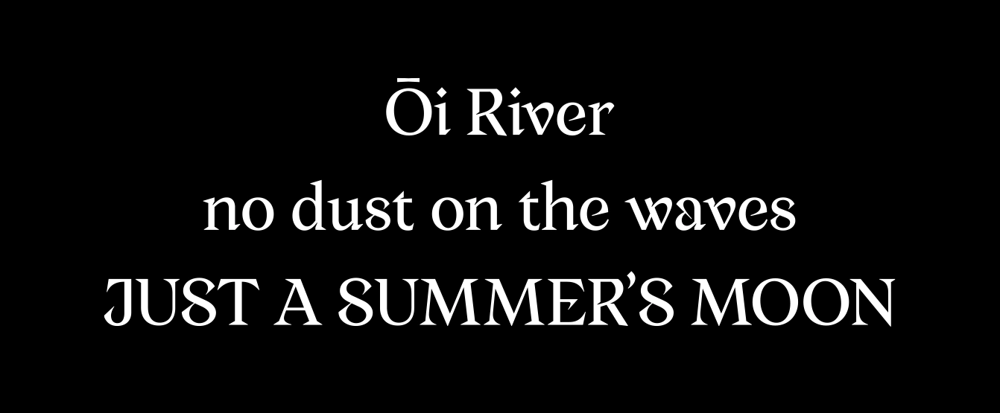
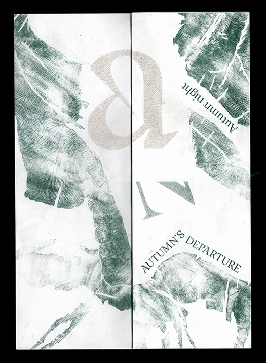
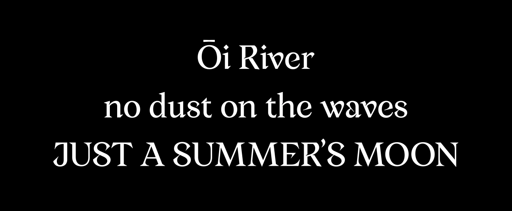
Maintenance, contrôles et dérapages,
project de Master,
formats : A6, A5, A4, A3,
papier fluo Clairefontaine 80 g,
2022.
Une routine s’est installée et au fur et à mesure que le temps passe. La vision que j’ai du quartier où j'ai toujours vécu est devenue banale et indifférente. Mes trajets au quotidien sont devenus mécaniques et pratiques. J’ai choisi ce quartier comme terrain d’expérimentation, redécouvrir ce que je considérais alors comme banal. J’ai effectué diverses marches dans lesquelles je déambulais sans but. L’objectif était de percevoir ce quartier non plus seulement comme le lieu où je vis mais de le regarder réellement, de le décortiquer, le redécouvrir à nouveau. Les contributions graphiques que je voulais réaliser, permettraient de rompre avec notre quotidien en perdant notre esprit dans un instant poétique.
Lors de ces déambulations, je décide de capter le contenu textuel que je rencontre lors de ma marche. Inspiré des situationnistes, cet ensemble de langage compilé crée un corpus de texte unique et propre à ma déambulation. Pour élaborer mes poèmes, je décide de respecter la chronologie de ma déambulation, et de ne pas inverser l’ordre d’apparition des mots. Le texte est supprimé et recomposé pour écrire les poèmes.
Un ensemble de langage issu d’un environnement vernaculaire recomposé pour créer des poèmes aux thèmes variés. Le contenu de la collecte contraint l’écriture mais témoigne d’une réalité et d’un contexte géographique et politique. Exposer ces poèmes à la vue de tous m’a permis de redistribuer le contenu textuel. Parsemer dans tout le quartier, ils invitent à la flânerie et à se perdre de la même façon que j’ai pu le faire lors de mes recherches.
Maintenance, contrôles et dérapages,
master project,
formats : A6, A5, A4, A3,
fluo paper Clairefontaine 80 g,
2022.
A routine has set in as time goes by. The vision I have of the neighborhood where I have always lived has become ordinary and uninteresting. My daily trips have become mechanical and practical. I chose this neighborhood as a field of experimentation, to rediscover what I considered banal. I made several walks in which I roamed aimlessly. The objective was to perceive this district not only as the place where I live but to really look at it, to dissect it, to rediscover it all over again. The graphic contributions that I wanted to realize, would allow to break with our daily life by losing our thought in a poetic moment.
During these walks, I decide to collect the textual content that I encountered during my walk. Inspired by the situationists, this set of compiled language creates a unique corpus of text specific to my walk. To elaborate my poems, I decide to respect the timeline of my roam, and not to reverse the order of the words' appearance. The text is removed and recomposed to write the poems.
A set of language from a vernacular environment recomposed to create poems with varied themes. The content of the collection constrains the writing but reflects a reality and a geographical and political context. Displaying these poems for everyone, allowed me to redistribute the textual content. Spread throughout the neighborhood, they invite you to wander and get lost in the same way I did during my research.


MF Beach Club,
type Design pour une typographie variable,
2023.
MF Beach Club est la première typographie créée en collaboration entre Romain Marc et Corentin Echivard. Son esthétique ronde et chaleureuse fait nous penser à une journée bucolique sur la plage. Ce caractère variable joue sur plusieurs axes, passant d'un fût pleine à un stencil et d'un sans à avec empattement. En jouant avec les variables, ce caractère offre un large éventail de possibilités qui conviendra à tout les goûts.
MF Beach Club fait aujourd'hui partie du projet de la fonderie Milletype Foundry mené avec Romain Marc.
MF Beach Club,
type Design for a variable typeface,
2023.
MF Beach Club is the first typeface created in collaboration between Romain Marc and Corentin Echivard. Its round, warm aesthetic makes you think of a day lying on the beach. This variable typeface plays with several axes, changing from a solid design to a stencil font, and from a sans to a serif. By playing with variables, this typeface offers a wide range of possibilities to suit everyone.
MF Beach Club is now part of the Milletype Foundry project lead with Romain Marc.

 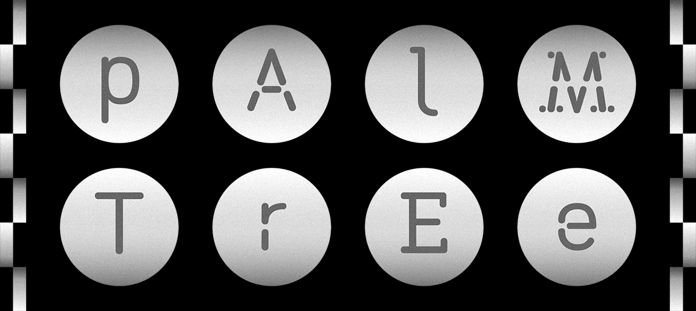
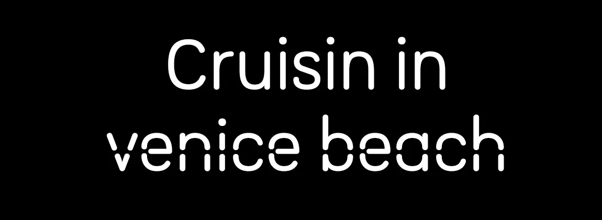
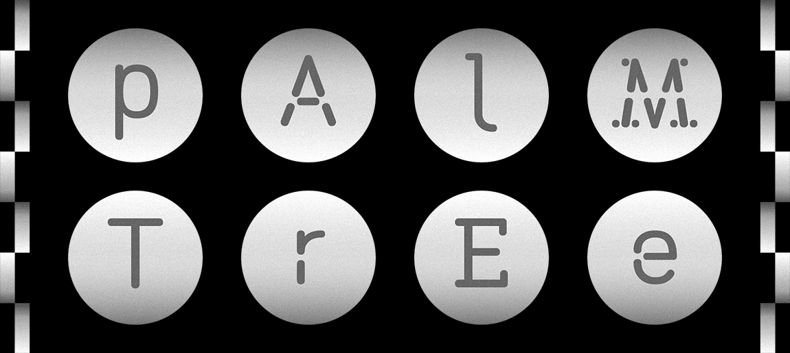
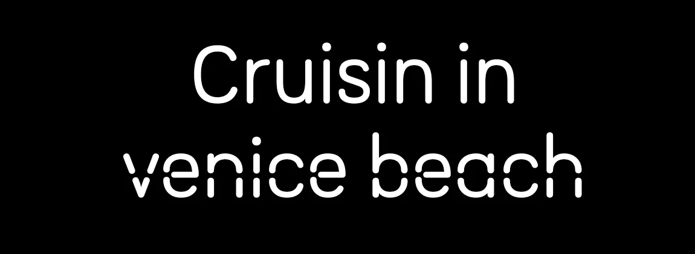

Images archivées, collectées, empruntées,
Mémoire de Master,
100 × 150 mm,
imprimé par l'Imprimerie Launay,
papier Cocoon recyclé : couverture 300 g et intérieur 90 g,
cartes postale sérigraphiés,
2021.
Images archivées, collectées, empruntées est mon mémoire écrit et réaliser pour mon Master de design graphique au Campus Fonderie de l’image. Plongé·e·s dans un monde où l’image est omniprésente, notre environnement est submergé d’images auxquelles nous ne prêtons plus attention.
Images archivées, collectées, empruntées aborde l’emploi et la réappropriation d’images auxquelles les designeur·e·s ont attribué un nouveau récit, une nouvelle narration. Ces gestes sont abordés via la constitution d’une archive graphique formelle et picturale. Mais également par la collecte et l’extraction de signes, formes, issus d’environnements naturels ou urbains. Ou encore au travers l’emprunt, le détournement ou la décontextualisation des images. Archivées, collectées, empruntées, les images sont des matières vivantes et malléables qui demeure une source inépuisable de création.
Images archivées, collectées, empruntées,
thesis for my Master degree,
100 × 150 mm,
printed by l'Imprimerie Launay,
recycled Cocoon paper: cover 300g et interior 90 g,
postal cards screen printed,
2021.
Images archivées, collectées, empruntées (Archived, collected, borrowed images) is my thesis written and realized for my Master of Graphic Design at the Campus Fonderie de l'image. In a world where images are omnipresent, our environment is overwhelmed with images to which we no longer pay attention.
Images archivées, collectées, empruntées explores the use and the reappropriation of images to which designers have given a new story, a new narrative. These gestures are explored through the constitution of a formal and pictorial graphic archive. But also through the collection and extraction of signs, forms, from natural or urban environments. Or through the borrowing, the detour or the decontextualization of images. Archived, collected, borrowed, images are living and flexible materials that remain an inexhaustible source of creation.


Éphémère,
design éditorial d'après des articles de Wikipédia,
160 × 240 mm,
couverture : papier tissé gris anthracite,
intérieur : papier croquis Canson 90 g,
couverture et marques pages sérigraphiés,
2021.
« La ‹ pollution lumineuse › émise par les luminaires du Pont-canal de Briare sur la Loire attire des milliers d'éphémères. Les femelles ont ici pondu sous les luminaires (points jaunes) et de nombreux éphémères ont été piégés par les toiles d'araignées. Le matin des guêpes y viennent – parfois par centaines – ‹ voler › aux araignées une partie des cadavres d'insectes qu'elles ont tué et emballé dans un fourreau de soie la nuit. Ce phénomène est à la fois un exemple de ‹ puits écologique › et de piège écologique. » — Wikipédia.
Éphémère est un projet de cours d'édition où il nous était demandé de produire une édition à partir d'articles issus de Wikipédia. J'ai choisi de travailler autour de la prolifération d'informations sur internet et les utilisations que l'on fait de ces connaissances. Wikipédia est une ressource riche mise à la disposition de tous. Mon protocole commence avec un article, ici le Rasoir d'Ockham. Je décide, ensuite, de cliquer sur le premier lien disponible dans chaque article et cela 6 fois de suite. Bien que lié par le protocole, cet ensemble d'articles perd de pertinence en rapport au premier sujet. De ‹ Rasoir d'Ockham › jusqu'à ‹ Langues ›, la dégradation de l'information se retrouve également dans la mise en page. Le texte se pixélise de plus en plus, le blanc prend de plus en plus de place. La lecture devient de plus en plus compliquée. Viens alors la question de la pollution lumineuse qui guide nos quotidiens et à laquelle on se laisse piéger.
Éphémère,
editorial design from the articles of Wikipédia,
160 × 240 mm,
cover: woven paper gris anthracite,
interior: sketch paper Canson 90 g
cover and bookmarks screen printed,
2021.
"The 'light pollution' emitted by the lights of the Briare bridge-canal on the Loire attracts thousands of mayflies. The females here have laid their eggs under the lights (yellow dots) and many mayflies have been trapped by the spider webs. In the morning wasps come here — sometimes by the hundreds — to 'steal' from the spiders some of the insect corpses that they have killed and wrapped in a silk sheath at night. This phenomenon is both an example of an 'ecological sink' and an ecological trap." — Wikipedia.
Éphémère is an editorial course where we were asked to produce an edition based on articles from Wikipedia. I chose to work around the proliferation of information on the internet and the uses we make of this knowledge. Wikipedia is a rich resource available to everyone. My protocol starts with an article, here Ockham's Razor. I decide, then, to click on the first available link in each article and this 6 times in a row. Although linked by the protocol, this set of articles loses relevance to the first topic. From 'Ockham's Razor' to 'Languages', the degradation of the information is also found in the layout. The text becomes more and more pixelated, the white takes more and more space. The reading becomes more and more complicated. Then comes the question of the light pollution which guides our daily life and to which we let ourselves be trapped.


Burner institute,
typographie inspiré d'un caractère,
parchemin : 210 × 8300 mm,
posters : 1200 × 800 mm,
papier thermique imprimé avec un fax,
2021.
Burner institute est un spécimen basé sur un caractère imprimé avec un fax sur un papier thermique de 205 × 8985 mm. Résultat d'un workshop dirigé par Rozenn Voyer et Clément Faydit (Traduttore, traditore). Collaboration entre Aurélien Brigaud, Romain Marc, Antoine Jarno et moi-même.
Lors cette semaine, nous avons réfléchis autour de la question de la représentation d'une personnalité dans la typographie. Il était demandé de questionner les notions ‹ Character, character ›. Caractères humains et caractères typographiques, alors, s'oppose et se rejoignent entre dichotomie et symbiose.
En nous inspirant de l’histoire du graffeur Vamp est née l’idée d’une fonte s’inscrivant dans une dualité entre l'opposition de la dégradation et des écritures institutionnelles. Le dessin des caractères s’est fait sur papier thermo-sensible, au briquet. C'est par la destruction, la dégradation que s'est créé cet alphabet. Inspiré des pratiques de collages, graffitis et de l’écriture au noir de bougie. Ce personnage, au premier abord dans les marges, cache une histoire qui était en opposition avec sa vie ‹ ordinaire ›. Travailleur le jour, il graffait les murs de la ville de Londres la nuit.
Nous avons choisi de poser un regard critique en remplaçant certains mots ou expressions comme un hack de cette loi controversé. Caractères, expérimentations et collages ont été alors utilisés pour annoter cet exemplaire de la loi.
Burner institute,
typeface based on a character,
parchment: 210 × 8300 mm,
posters: 1200 × 800 mm,
thermal paper printed with a fax,
2021.
Burner institute is a specimen based on a typeface printed with a fax on a thermal paper of 205 × 8985 mm. The result of a workshop directed by Rozenn Voyer and Clément Faydit (Traduttore, traditore). Collaboration between Aurélien Brigaud, Romain Marc, Antoine Jarno and myself.
During this week, we have thought about the question of the representation of a personality in typography. We were asked to question the notions ‘Character, character’. Human characters and typographic characters, then, are opposed and joined somewhere between dichotomy and symbiosis.
Inspired by the story of the graffiti artist Vamp, we came up with the idea of a font that would be part of a duality between the opposition of degradation and institutional writing. The drawing of the characters was done on thermo-sensitive paper, with a lighter. It is by the destruction, the degradation that this alphabet was created. Inspired by the practices of collages, graffiti and writing with candle soot.
This character, at first glance in the margins, hides a story that was in opposition to his ‘ordinary’ life. A worker by day, he was graffitiing the walls of the city of London by night. We chose to take a critical look by replacing certain words or expressions as a hack of this controversial law. Characters, experiments and collages were then used to annotate this copy of the law.


La récolte citadine,
identité visuelle du tiers-lieu,
type design : La Serfouette, Une typographie stencil et variable,
2020.
La Récolte Citadine est un projet menée par Audrey David et Marylise Pascal, c’est un tiers-lieu situé à la Porte de Vincennes dans le 20e arrondissement de Paris, il a pour vocation de proposer un lieu hybride d’activités, de rencontres et d’échanges culturelles. Ce lieu implanté dans l’ancienne gare Charonne-Marchandise de la petite ceinture revendique des vertues écologique et social, met en avant le savoir-vivre et le respect de la Terre. Des activités sont proposées afin de satisfaire le plus grand nombre d’habitant·e·s du quartier et de pérenniser une démarche écoresponsable.
L’identité visuelle réalisé pour la Récolte Citadine a été pensé pour affirmer l’indépendance du lieu. Elle favorise le fait-main et l’éco-responsabilité. C’est dans ce but que j’ai souhaité mettre en place des ‹ outils › mis à disposition pour le lieu. La typographie, les pictogrammes ainsi que les supports de communication sont pensés pour faciliter la déclinaison et la fabrication des différents supports de communication. La typographie et les pictogrammes, par exemple, sont dessinés sans contre forme, à la manière d’un stencil. Similaire au papier découpé, leur dessin franc et sans courbes facilitent la reproduction et son application sur les différents supports dont le tiers-lieu a besoin.
La récolte citadine,
visual identity of the third place,
type design: la Serfouette, A stencil and variable typeface,
2020.
La Récolte Citadine is a project led by Audrey David and Marylise Pascal, it's a third place located at the Porte de Vincennes in the 20th district of Paris, it aims to offer a hybrid place of activities, meetings and cultural exchanges. This place established in the old Charonne-Marchandise station of La petite Ceinture claims ecological and social virtues, puts forward the good life and the respect of the Earth. Activities are proposed in order to satisfy the greatest number of inhabitants of the district and to perpetuate an eco-friendly approach.
The visual identity created for La Récolte Citadine was designed to affirm the independence of the place. It encourages handmade and eco-responsibility. It's in this aim that I wished to set up 'tools' made at the disposal of the place. The typography, the pictograms as well as the communication supports are thought to facilitate the development and the manufacturing of the various communication supports. The typography and the pictograms, for example, are drawn without counter form, in the same way as a stencil. Similar to cut paper, their sharp design without curves make it easier to reproduce and apply them to the different media that the third party place needs.


Claire Laurent,
design et développement du site internet,
2022.
Ce site web est le portfolio de la designeure Claire Laurent. Le développement et le design du site ont été entièrement créés par mes soins. N'ayant pas eu de formation au digital, ce portfolio a été réalisé en autodidacte. Il marque, pour moi, le début d'un attrait au développement web. Bien qu'amateur, cette pratique me permet d'expérimenter le monde du web par mes propre soins. La création du site se base sur le style de Claire Laurent, une efficacité ainsi qu'une attention particulière au concept.
Claire Laurent,
design and development of the website,
2022.
This website is the portfolio of the designer Claire Laurent. The development and the design of the site were entirely done by myself. Not having had any training in digital, this portfolio has been realized in autodidact. It is for me the beginning of an interest in web development. Although amateur, this skill allows me to experiment the world of the web by my own care. The creation of the site is based on the style of Claire Laurent, an efficiency as well as a particular attention to the concept.


Experimentation personnelle avec la sérigraphie,
multi formats,
multi supports,
2021-23.
J'ai récemment acheté une machine de sérigraphie ce qui me permet d'expérimenter régulièrement autour de cette technique. Je n'ai pas encore de ligne directive dans mes créations, mais j'aime l'idée de travailler autour du concept de l'empreinte. L'émulsion photographique permet de figer une surface sur le tissu et concevoir autour de cette idée d'ombre. Cette réflexion m'amène à limiter le plus possible l'usage du numérique et de voir cette pratique comme une pratique manuelle et artisanale.
Seul ou en collaboration (notamment Claire Laurent ou Aurélien Brigaud), j'ai pu réaliser diverses créations,entre autre, grâce à la projection d'objets ou au masquage avec du rouleau adhésif, chaque rendu devient authentique et témoigne d'un instant et d'un geste.
Self experimentation with screen printing,
multi formats,
multi supports,
2021-23.
I recently bought a screen-printing machine, which allows me to experiment regularly with this technique. I don't yet have any particular guidelines for my designs, but I like the idea of working around the concept of the imprint. Photographic emulsion enables me to freeze a surface on the fabric and design around this idea of shadow. This reflection leads me to limit the use of digital technology as much as possible and to see this practice as manual and artisanal.
Working alone or in collaboration with others (notably Claire Laurent and Aurélien Brigaud), I've been able to produce a variety of creations, using, for example, projected objects or masking with adhesive tape. Each rendering becomes authentic and bears witness to an instant and a gesture.


About
Corentin Echivard
corentinech[at]gmail.com
06 76 30 33 10
Noisy-Le-Grand
FR/ENG
Work
2023-xx Milletype Foundry, co-fondateur, fonderie digitale, entre Lyon & Niort.
2017-xx Corentin Echivard, freelance, designeur graphique et typographe, Noisy-Le-Grand.
2023-23 Jolana Sýkorová, stage, designeur graphique et typographe, Amsterdam.
2019-22 Studio Ellair, alternance, designeur graphique, Chambéry.
2017-19 IN/OFF, alternance, designeur graphique, Paris.
2013-16 MINES ParisTech, alternance, designeur graphique, Paris.
Studies
2020-22 Master, directeur·trice de création en design graphique, Campus Fonderie de l’Image, Bagnolet.
2019-20 Licence, concepteur·trice designer en communication graphique éco-responsable : print, Campus Fonderie de l’Image, Bagnolet.
2017-19 BTS, graphic design, Campus Fonderie de l'image, Bagnolet.
2016-17 Mise à niveau en arts appliqués, Condé, Paris.
2013-16 Baccalauréat professionnel, communication et industries graphiques : print, Gobelins l’École de l’Image, Noisy-Le-Grand.
Awards
2019 Worldskills, médaille d’argent, arts graphiques et pré-presse, Kazan.
2018 Worldskills France, médaille d’or, arts graphiques et pré-presse, Caen.
2017 Worldskills France, médaille de bronze, arts graphiques et pré-presse, Bordeaux.
Pour plus d'informations ou un portfolio en pdf, envoyez-moi un email !
About
Corentin Echivard
corentinech[at]gmail.com
+33(0)6 76 30 33 10
Noisy-Le-Grand
FR/ENG
Work
2023-xx Milletype Foundry, co-founder, digital type foundry, between Lyon & Niort.
2017-xx Corentin Echivard, freelancer, graphic designer and typographer, Noisy-Le-Grand.
2023-23 Jolana Sýkorová, internship, graphic designer and typographer, Amsterdam.
2019-22 Studio Ellair, apprenticeship, graphic designer, Chambéry.
2017-19 IN/OFF, apprenticeship, graphic designer, Paris.
2013-16 MINES ParisTech, apprenticeship, graphic designer, Paris.
Studies
2020-22 Master degree, creative director in graphic design, Campus Fonderie de l'Image, Bagnolet.
2019-20 Bachelor, designer in eco-responsible graphic design, Campus Fonderie de l'Image, Bagnolet.
2017-19 BTEC higher national diploma, graphic design, Campus Fonderie de l'Image, Bagnolet.
2013-16 BTEC national diploma, communication and graphic industries, Gobelins, l'École de l'Image, Noisy-Le-Grand.
Awards
2019 Worldskills, silver medal, graphic design technology, Kazan.
2018 Worldskills France, gold medal, graphic design technology, Caen.
2017 Worldskills France, bronze medal, graphic design technology, Bordeaux.
For more informations or a pdf portfolio send me an email!